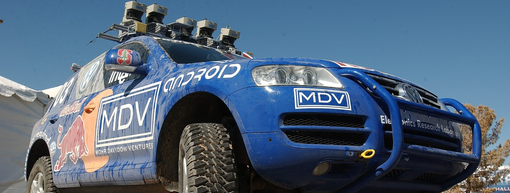
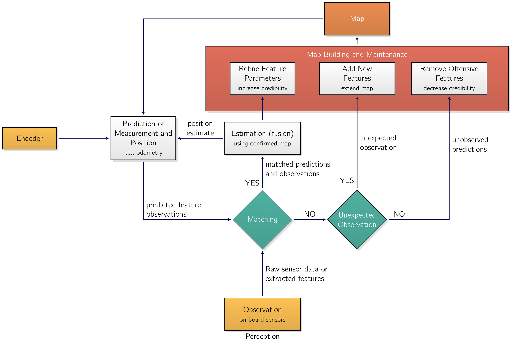
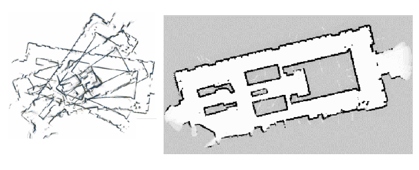
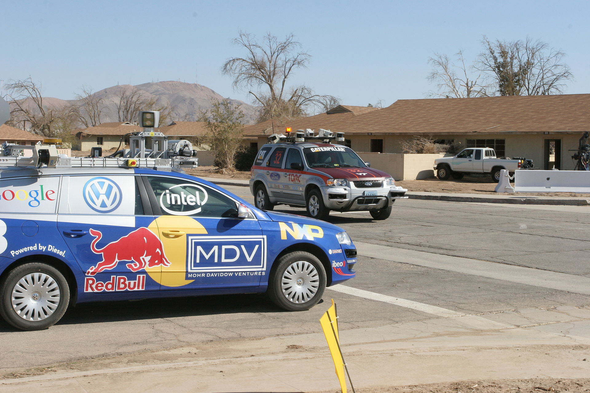

Humans are excellent navigators due to their remarkable ability to build cognitive maps [†-2] McNamara, T. P., Hardy, J. K. & Hirtle, S. C. Subjective hierarchies in spatial memory. Journal of Experimental Psychology: Learning, Memory, and Cognition 15, 211 (1989) which form the basis of spatial memory [†-3] Chun, M. M. & Jiang, Y. Contextual cueing: Implicit learning and memory of visual context guides spatial attention. Cognitive psychology 36, 28–71 (1998), Huang, C. et al. Visual language maps for robot navigation in 2023 IEEE International Conference on Robotics and Automation (ICRA) (2023), 10608–10615. However, when it comes to AMRAutonomous Mobile RoboticsSelf-navigating machines moving materials and goods independently without fixed tracks or wires. They use smart software, cameras, and sensors to map spaces and safely steer around people or obstacles in real time., we unfortunately need to be more hands on. All of the localisation strategies we have discussed previously require active human effort to install the robot into a space. Artificial environmental modifications may be necessary to reduce ambiguity [†-4] Meyer-Delius, D. et al. Using artificial landmarks to reduce the ambiguity in the environment of a mobile robot in 2011 IEEE International Conference on Robotics and Automation (2011), 5173–5178. Even if this is not so, a map of the environment must be created for the robot.
But a robot which localizes successfully has the right sensors for detecting the environment, and so the robot ought to build its own map.
This ambition goes to the heart of AMRAutonomous Mobile RoboticsSelf-navigating machines moving materials and goods independently without fixed tracks or wires. They use smart software, cameras, and sensors to map spaces and safely steer around people or obstacles in real time.. In prose, we can express our eventual goal as follows:
While we have system which allows certain level of intelligence to robots, most applications require a connected network or a central node to achieve any autonomous action [†-5] Hazik, J. et al. Fleet management system for an industry environment. Journal of Robotics and Control (JRC) 3, 779–789 (2022), Xidias, E., Zacharia, P. & Nearchou, A. Intelligent fleet management of autonomous vehicles for city logistics. Applied Intelligence 52, 18030–18048 (2022). Accomplishing this goal purely using internal components in a robust is probably years away, but an important sub-goal is the invention of techniques for autonomous creation and modification of an environment map. Of course a AMRAutonomous Mobile RoboticsSelf-navigating machines moving materials and goods independently without fixed tracks or wires. They use smart software, cameras, and sensors to map spaces and safely steer around people or obstacles in real time.’s sensors have only limited range, and so it must physically explore its environment to build such a map. So, the robot must not only create a map but it must do so while moving and localizing to explore the environment. This is often called the SLAMSimultaneous Localisation and MappingA process where a computer constructs or updates a map of an unknown environment while simultaneously keeping track of an entity’s location within it. While this initially appears to be a chicken or the egg problem, there are several algorithms known to solve it in, at least approximately, tractable time for certain environments. Popular approximate solution methods include the particle filter, extended Kalman filter, covariance intersection, and GraphSLAM. SLAM algorithms are based on concepts in computational geometry and computer vision, and are used in robot navigation, robotic mapping and odometry for virtual reality or augmented reality. problem, arguably the most difficult problem specific to AMRAutonomous Mobile RoboticsSelf-navigating machines moving materials and goods independently without fixed tracks or wires. They use smart software, cameras, and sensors to map spaces and safely steer around people or obstacles in real time. systems.
Computational problem of constructing or updating a map of an unknown environment while simultaneously keeping track of an agent’s location within it. While this initially appears to be a chicken or the egg problem, there are several algorithms known to solve it in, at least approximately and in reasonable time for certain environments. Popular solutions include the particle filter, extended Kalman filter, covariance intersection, and Graph SLAMSimultaneous Localisation and MappingA process where a computer constructs or updates a map of an unknown environment while simultaneously keeping track of an entity’s location within it. While this initially appears to be a chicken or the egg problem, there are several algorithms known to solve it in, at least approximately, tractable time for certain environments. Popular approximate solution methods include the particle filter, extended Kalman filter, covariance intersection, and GraphSLAM. SLAM algorithms are based on concepts in computational geometry and computer vision, and are used in robot navigation, robotic mapping and odometry for virtual reality or augmented reality..
SLAMSimultaneous Localisation and MappingA process where a computer constructs or updates a map of an unknown environment while simultaneously keeping track of an entity’s location within it. While this initially appears to be a chicken or the egg problem, there are several algorithms known to solve it in, at least approximately, tractable time for certain environments. Popular approximate solution methods include the particle filter, extended Kalman filter, covariance intersection, and GraphSLAM. SLAM algorithms are based on concepts in computational geometry and computer vision, and are used in robot navigation, robotic mapping and odometry for virtual reality or augmented reality. algorithms are based on concepts in computational geometry and computer vision, and are used in robot navigation, robotic mapping and odometry for virtual reality or augmented reality.
The reason why SLAMSimultaneous Localisation and MappingA process where a computer constructs or updates a map of an unknown environment while simultaneously keeping track of an entity’s location within it. While this initially appears to be a chicken or the egg problem, there are several algorithms known to solve it in, at least approximately, tractable time for certain environments. Popular approximate solution methods include the particle filter, extended Kalman filter, covariance intersection, and GraphSLAM. SLAM algorithms are based on concepts in computational geometry and computer vision, and are used in robot navigation, robotic mapping and odometry for virtual reality or augmented reality. is difficult is born precisely from the interaction between the robot’s position updates as it localizes and its mapping actions. If a AMRAutonomous Mobile RoboticsSelf-navigating machines moving materials and goods independently without fixed tracks or wires. They use smart software, cameras, and sensors to map spaces and safely steer around people or obstacles in real time. updates its position based on an observation of an imprecisely known feature, the resulting position estimate becomes correlated with the feature location estimate. Similarly, the map becomes correlated with the position estimate if an observation taken from an imprecisely known position is used to update or add a feature to the map.
For localization the robot needs to know where the features are whereas for map building the robot needs to know where it is on the map.
The only path to a complete and optimal solution to this joint problem is to consider all the correlations between between position estimation and feature location estimation. Such cross-correlated maps are called stochastic maps [†-6] Hashimoto, S. et al. Humanoid robots in waseda university–hadaly-2 and wabian. Autonomous Robots 12, 25–38 (2002). Unfortunately, implementing such an optimal solution is still computationally prohibitive.
Fig. ?? presents a diagram incorporating map building and maintenance into the standard localization loop depicted by Figure (5.29) during discussion of Kalman filter localisation [9]. The added arcs represent the additional flow of information which occurs when there is an imperfect match between observations and measurement predictions.
Unexpected observations will affect the creation of new features in the map whereas unobserved measurement predictions will affect the removal of features from the map. As discussed previously, each specific prediction or observation has an unknown exact value and so it is represented by a distribution. The uncertainties of all of these quantities must be considered throughout this process.

The new type of map we are creating not only has features in it as did previous maps, but it also has varying degrees of probability that each feature is indeed part of the environment.
We represent this new map with a set of probabilistic feature locations , each with the covariance matrix and an associated credibility factor between 0 and 1.
The purpose of is to quantify the belief in the existence of the feature in the environment:
| (4.25) |
In contrast to the map used for Kalman filter localisation previously, the map is NOT assumed to be precisely known as it will be created by an uncertain robot over time. This is why the features are described with associated covariance matrices .
Similar to Kalman filter localisation, the matching steps has three (3) outcomes in regard to measurement predictions and observations:
-
matched prediction and observations,
-
unexpected observations, and
-
unobserved predictions
Localisation, or the position update of the robot, proceeds as before. However, the map is also updated now, using all three outcomes and complete propagation of all the correllated uncertainties.
The interesting concept in this modeling is the credibility factor , which governs the likelihood that the mapped feature is indeed in the environment.
How should the robot’s success at matching a mapped feature increase the chance that the mapped feature is “correct?”
As an example, in [†-7] Carroll, R. J. & Ruppert, D. Transformation and weighting in regression (Chapman and Hall/CRC, 2017) the following function is proposed for calculating credibility:
| (4.26) |
where and define the learning and forgetting rate and and are the number of matched and unobserved predictions up to time , respectively. The update of the covariance matrix building the feature positions and the robot’s position are strongly correlated.
This forces us to use a stochastic map, in which all cross-correlations must be updated in each cycle.
The stochastic map consists of a stacked system state vector:
| (4.27) |
and a system state covariance matrix:
| (4.28) |
where the index stands for the robot and the index to for the features in the map.
In contrast to localization based on an a priori accurate map, in the case of a stochastic map the cross-correlations must be maintained and updated as the robot is performing automatic map-building. During each localization cycle, the cross-correlations robot-to-feature and feature-to-robot are also updated.
In short, this optimal approach requires every value in the map to depend on every other value, and therein lies the reason that such a complete solution to the automatic mapping problem is beyond the reach of even today’s computational resources.
The AMRAutonomous Mobile RoboticsSelf-navigating machines moving materials and goods independently without fixed tracks or wires. They use smart software, cameras, and sensors to map spaces and safely steer around people or obstacles in real time. research community has spent significant research effort on the problem of automatic mapping, and has demonstrating working systems in many environments without having solved the complete stochastic map problem described earlier.
This field of AMRAutonomous Mobile RoboticsSelf-navigating machines moving materials and goods independently without fixed tracks or wires. They use smart software, cameras, and sensors to map spaces and safely steer around people or obstacles in real time. research is extremely large, and this LectureBook will NOT present a comprehensive survey of the field.
Instead, let’s look at the two (2) key considerations associated with automatic mapping, together with brief discussions of the approaches taken by several automatic mapping solutions to overcome these challenges.
Cyclic Environments
Possibly the single hardest challenge for automatic mapping to be conquered is to correctly map cyclic environments [†-8] Gutmann, J.-S. & Konolige, K. Incremental mapping of large cyclic environments in Proceedings 1999 IEEE International Symposium on Computational Intelligence in Robotics and Automation. CIRA’99 (Cat. No. 99EX375) (1999), 318–325. The problem is simple:
This problem is hard because of the fundamental behavior of automatic mapping systems:
The maps they create are not perfect.
And, given any local imperfection, accumulating such imperfections over time can lead to arbitrarily large global errors between a map, at the macro level, and the real world, as shown in Fig. 4.22.

Such global error is usually irrelevant for AMRAutonomous Mobile RoboticsSelf-navigating machines moving materials and goods independently without fixed tracks or wires. They use smart software, cameras, and sensors to map spaces and safely steer around people or obstacles in real time. localisation and navigation. After all, a warped map will still serve the robot perfectly well so long as the local error is bounded. However, an extremely large loop still eventually returns to the same spot, and the robot must be able to note this fact in its map. Therefore, global error does indeed matter in the case of cycles. In some of the earliest work attempting to solve the cyclic environment problem, [116] used a purely topological representation of the environment, reasoning that the topological representation only captures the most abstract, most important features and avoids a great deal of irrelevant detail. When the robot arrives at a topological node that could be the same as a previously visited and mapped node, [143] e.g., similar distinguishing features. then the robot postulates that it has indeed returned to the same node. To check this hypothesis, the robot explicitly plans and moves to adjacent nodes to see if its perceptual readings are consistent with the cycle hypothesis.
With the recent popularity of metric maps such as fixed decomposition grid representations, the cycle detection strategy is not as straightforward. Two important features are found in most autonomous mapping systems that claim to solve the cycle detection problem:
-
First, as with many recent systems, these AMRAutonomous Mobile RoboticsSelf-navigating machines moving materials and goods independently without fixed tracks or wires. They use smart software, cameras, and sensors to map spaces and safely steer around people or obstacles in real time. tend to accumulate recent perceptual history to create small-scale local sub-maps [†-10] Nourbakhsh, I. R. et al. Mobile robot obstacle avoidance via depth from focus. Robotics and Autonomous Systems 22, 151–158 (1997). In this approach, each sub-map is treated as a singular sensor during the robot’s position update. The advantage of this approach is two-fold.
-
As odometry is relatively accurate over small distances, the relative registration of features and raw sensor strikes in a local sub-map will be quite accurate.
-
The robot will have created a virtual sensor system with a significantly larger horizon than its actual sensor system’s range. In a sense, this strategy at the very least defers the problem of very large cyclic environments by increasing the map scale that can be handled well by the robot.
-
-
The second recent technique for dealing with cycle environments is in fact a return to the topological representation. Some recent automatic mapping systems will attempt to identify cycles by associating a topology with the set of metric sub-maps, explicitly identifying the loops first at the topological level.
One could certainly imagine other augmentations based on known topological methods.
For example, the globally unique localisation methods described previously could be used to identify topological correctness.
Dynamic Environments
A second challenge extends NOT just to existing autonomous mapping solutions but even to the basic execution of the stochastic map approach.
All previously mentioned strategies tend to assume the environment is either unchanging or changes in ways that are virtually insignificant.
Such assumptions are certainly valid with respect to some environments, such as for example the department during Christmas.
However, for numerous practical applications, this assumption is lacking at best. In the case of wide-open spaces which are popular gathering places for humans, there is rapid change in the free-space and a vast majority of sensor strikes represent detection of the transient humans rather than fixed surfaces such as the perimeter wall.
Another class of dynamic environments are spaces such as factory floors and warehouses, where the objects being stored redefine the topology of the pathways on a day-to-day basis as shipments are moved in and out.
In all such dynamic environments, an automatic mapping system should capture the salient [144] In this context, salient means anything which is sticking out. objects detected by its sensors and, furthermore, the robot should have the flexibility to modify its map as the position of these salient objects changes.
The subject of continuous mapping, or mapping of dynamic environments is to some degree a direct outgrowth of successful strategies for automatic mapping of unfamiliar environments.
For example, in the case of stochastic mapping using the credibility factor mechanism, the credibility equation can continue to provide feedback regarding the probability of existence of various mapped features after the initial map creation process is ostensibly complete. Therefore, a mapping system can become a map-modifying system by simply continuing to operate.
This is most effective, of course, if the mapping system is real-time and incremental.
If map construction requires off-line global optimisation, then the desire to make small-grained, incremental adjustments to the map is more difficult to satisfy.
Earlier we’ve stated a mapping system should capture only the salient objects detected by its sensors. One common argument for handling the detection of, for instance, humans in the environment is that mechanisms such as serve to be mapped in the first place.
The general solution to the problem of detecting salient features, however, requires a solution to the perception problem in general. When a robot’s sensor system can reliably detect the difference between a wall and a human, using for example a vision system, then the problem of mapping in dynamic environments will become significantly more straightforward.
We have discussed just two important considerations for automatic mapping. There is still a great deal of research activity focusing on the general map building and localization problem. This field is certain to produce significant new results in the next several years, and as the perceptual power of robots improves we expect the payoff to be greatest here.
A prize competition for American autonomous vehicles, funded by the Defense Advanced Research
Projects Agency (DARPA). The goal of the challenge is too further DARPA’s mission to sponsor
revolutionary, high-payoff research that bridges the gap between fundamental discoveries and military
use. The initial DARPA Grand Challenge [145] ¶ 
The third event, the DARPA Urban Challenge in 2007, extended the initial Challenge to autonomous operation in a mock urban environment. The 2012 DARPA Robotics Challenge, focused on autonomous emergency-maintenance robots, and new Challenges are still being conceived.
The DARPA Subterranean Challenge was tasked with building robotic teams to autonomously map, navigate, and search subterranean environments. Such teams could be useful in exploring hazardous areas and in search and rescue.
-
¶
- SLAMSimultaneous Localisation and Mapping
A process where a computer constructs or updates a map of an unknown environment while simultaneously keeping track of an entity’s location within it. While this initially appears to be a chicken or the egg problem, there are several algorithms known to solve it in, at least approximately, tractable time for certain environments. Popular approximate solution methods include the particle filter, extended Kalman filter, covariance intersection, and GraphSLAM. SLAM algorithms are based on concepts in computational geometry and computer vision, and are used in robot navigation, robotic mapping and odometry for virtual reality or augmented reality.
-
¶
- AMRAutonomous Mobile Robotics
Self-navigating machines moving materials and goods independently without fixed tracks or wires. They use smart software, cameras, and sensors to map spaces and safely steer around people or obstacles in real time.
- 1.
- Kivaan. An official DARPA photograph of Stanley at the 2005 DARPA Grand Challenge. 2007
- 2.
- McNamara, T. P., Hardy, J. K. & Hirtle, S. C. Subjective hierarchies in spatial memory. Journal of Experimental Psychology: Learning, Memory, and Cognition 15, 211 (1989)
- 3.
- Chun, M. M. & Jiang, Y. Contextual cueing: Implicit learning and memory of visual context guides spatial attention. Cognitive psychology 36, 28–71 (1998), Huang, C. et al. Visual language maps for robot navigation in 2023 IEEE International Conference on Robotics and Automation (ICRA) (2023), 10608–10615
- 4.
- Meyer-Delius, D. et al. Using artificial landmarks to reduce the ambiguity in the environment of a mobile robot in 2011 IEEE International Conference on Robotics and Automation (2011), 5173–5178
- 5.
- Hazik, J. et al. Fleet management system for an industry environment. Journal of Robotics and Control (JRC) 3, 779–789 (2022), Xidias, E., Zacharia, P. & Nearchou, A. Intelligent fleet management of autonomous vehicles for city logistics. Applied Intelligence 52, 18030–18048 (2022)
- 6.
- Hashimoto, S. et al. Humanoid robots in waseda university–hadaly-2 and wabian. Autonomous Robots 12, 25–38 (2002)
- 7.
- Carroll, R. J. & Ruppert, D. Transformation and weighting in regression (Chapman and Hall/CRC, 2017)
- 8.
- Gutmann, J.-S. & Konolige, K. Incremental mapping of large cyclic environments in Proceedings 1999 IEEE International Symposium on Computational Intelligence in Robotics and Automation. CIRA’99 (Cat. No. 99EX375) (1999), 318–325
- 9.
- Bruce, J., Balch, T. & Veloso, M. Fast and inexpensive color image segmentation for interactive robots in Proceedings. 2000 IEEE/RSJ International Conference on Intelligent Robots and Systems (IROS 2000)(Cat. No. 00CH37113) 3 (2000), 2061–2066
- 10.
- Nourbakhsh, I. R. et al. Mobile robot obstacle avoidance via depth from focus. Robotics and Autonomous Systems 22, 151–158 (1997)
- [142].
- Such as four (4) hallways that intersect to form a rectangle
- [143].
- e.g., similar distinguishing features.
- [144].
- In this context, salient means anything which is sticking out.